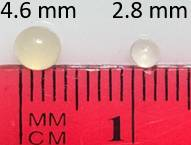

This virtual experiment examines ONPG hydrolysis by β-galactosidase, compares two immobilized-enzyme bead sizes, and uses free-enzyme data to build and interpret a Michaelis-Menten rate curve.
Student Learning Objectives
Use absorbance at 415 nm and the calibration relationship to determine ONP concentration.
Compare ONP production for 2.8 mm and 4.6 mm beads prepared with the same enzyme charge.
Determine an initial reaction rate from the slope of an ONP-concentration-versus-time line.
Use six initial rates to interpret Vmax and Km from a Michaelis-Menten response.
Relate bead diameter and the internal effectiveness factor to substrate concentration inside a bead.
System and Measurement
Reaction and optical measurement
ONPG is the substrate. β-galactosidase converts ONPG to yellow ONP and galactose.
The spectrophotometer measures how much light the sample absorbs at 415 nm. This reading is written as ABS415.
Blanking sets the spectrophotometer baseline to zero so background absorbance from the cuvette and solution is not counted as ONP.
Calibration: ABS415 = 3.5804 × CONP, with CONP in mM. Therefore CONP = ABS415 / 3.5804.
Photograph of the recirculating immobilized-enzyme apparatus used to motivate the Stage 1-3 simulation.
Worksheet: ONPG Bead Reactor, Enzyme Kinetics, and Internal Diffusion
Before Operating the Simulation
Click the About button at the top of the ONPG simulation and read the short system description. The pump recirculates liquid from the reservoir through the fluidized enzyme beads, past the inline spectrophotometer, and back to the reservoir. Stages 1 and 2 use the same enzyme charge and initial ONPG concentration; only bead diameter changes.
1. Before running the simulation, which bead size do you expect to produce ONP faster: 2.8 mm or 4.6 mm? Give one reason for your prediction.

Approximate bead sizes.
Prediction sketch
Reason for your prediction:
Experiment 1: Compare the Two Bead Sizes (Stages 1-3)
Purpose: collect matched spectrophotometer readings for 2.8 mm and 4.6 mm beads and compare their ONP production.
Procedure
Open Stage 1 (2.8 mm beads). Click “Set automatic readings · every 10 s.”
Click “Start 2-minute simulation.” Allow the automatic sequence to record all 13 readings from 0 to 120 simulation s.
Continue to Stage 2 (4.6 mm beads), set the same automatic 10 s sequence, and run the 2-minute simulation.
Open Stage 3 to compare the two saved runs. No new reactor run is performed in Stage 3.
Worksheet: ONPG Bead Reactor, Enzyme Kinetics, and Internal Diffusion
Experiment 1: Compare the Two Bead Sizes (Stages 1-3)
Record the paired results below.
Simulation time [s]
2.8 mm ABS415 [-]
2.8 mm ONP concentration, CONP [mM]
4.6 mm ABS415 [-]
4.6 mm ONP concentration, CONP [mM]
0
0
0
0
0
10
20
30
40
50
60
70
80
90
100
110
120
2. At the same time point, which bead size generally produced the higher ONP concentration? Cite one pair of values from the table.
Worksheet: ONPG Bead Reactor, Enzyme Kinetics, and Internal Diffusion
Experiment 1: Bead-Size Comparison and Internal Mass Transfer
Use the Stage 3 comparison screen and record the summary values.
Bead diameter [mm]
Initial rate [mM/min]
Time to 50% conversion [min]
Time to 80% conversion [min]
Final conversion [%]
Internal effectiveness factor [-]
2.8
4.6
3. Which bead preparation reacted faster? Support your answer with the initial rate and one time-to-conversion value.
External area per total bead volume
Atotal / Vtotal = 6 / d
Bead diameter, d [mm]
Calculation
Atotal / Vtotal [mm−1]
2.8
6 / 2.8
4.6
6 / 4.6
4. How does the area-to-volume comparison relate to the measured ONP response? Use one performance value from Stage 3.
Internal concentration and effectiveness
The internal effectiveness factor, ηi, is the actual whole-bead reaction rate divided by the rate that would occur if the entire bead were at the bead-surface substrate concentration. A lower ηi indicates a stronger internal-diffusion limitation.
5. Which bead has the larger decrease in ONPG concentration from the bead surface to the bead center? How is that difference reflected in ηi?
6. Return to your prediction in Question 1. What would you keep or revise after comparing the two runs?
Worksheet: ONPG Bead Reactor, Enzyme Kinetics, and Internal Diffusion
Experiment 2: Free-Enzyme Kinetics (Stage 4)
Purpose: determine the initial rate at six initial ONPG concentrations while holding enzyme amount, solution volume, pH, and temperature constant.
Why the slope is used
Each trace plots ONP concentration against time. During the first few seconds, the response is treated as approximately linear. The slope of each line is the initial reaction rate.
v0 = ΔCONP / Δt
The six slopes become six points on the Michaelis–Menten graph in Stage 5, where v0 is plotted against initial ONPG concentration.
Procedure
Open Stage 4 and click “Load six cuvettes.”
Click “Blank spectrophotometer.” The background reading is subtracted and the baseline becomes zero.
Click “Start 4.5-s scan.” All six ONP-concentration-versus-time lines are generated on the same graph.
Click “Show initial rates” and record the six slopes below.
Initial ONPG concentration, CONPG,0 [mM]
Initial rate, v0 [mM/s]
0.622
1.24
2.49
4.98
9.95
19.9
7. Which ONP-concentration-versus-time line has the largest slope? Report its initial ONPG concentration and its initial rate.
8. Compare the slope at 0.622 mM ONPG with the slope at 19.9 mM ONPG. What does this tell you about how initial rate changes as substrate concentration increases?
Worksheet: ONPG Bead Reactor, Enzyme Kinetics, and Internal Diffusion
Experiment 2: Michaelis–Menten Analysis (Stage 5)
Build the Stage 5 kinetics plot using the six initial rates from Stage 4.
v0 = VmaxCONPG,0 / (Km + CONPG,0)
For this fitted curve: Vmax = 0.00226 mM/s and Km = 2.00 mM.
9. Describe the overall shape of v0 versus initial ONPG concentration. Is the response linear over the full concentration range?
10. Use the equation to answer both parts: (a) when CONPG,0 is much greater than Km, what value does v0 approach? (b) when CONPG,0 is not much greater than Km, why does changing substrate concentration still change v0 noticeably?
11. Calculate Vmax / 2. On the Stage 5 graph, locate this rate and estimate the corresponding initial ONPG concentration. How does that concentration compare with Km?
12. What does Km represent for this enzyme–substrate system, and what does Vmax represent?
Rate increase at low and high substrate concentration
ONPG change [mM]
Rate at lower concentration [mM/s]
Rate at higher concentration [mM/s]
Rate factor = higher / lower
1.24 → 2.49
9.95 → 19.9
13. Did doubling ONPG produce the same rate increase in the low- and high-concentration ranges? Use the two rate factors in your answer.
Worksheet: ONPG Bead Reactor, Enzyme Kinetics, and Internal Diffusion
Experiment 3: Bead-Diameter Design (Stage 6)
Purpose: vary bead diameter and use the internal effectiveness factor to identify the largest tested bead diameter that meets ηi ≥ 0.95.
Procedure
Open Stage 6. Change bead diameter using the slider or the − / + controls.
Near the ηi = 0.95 boundary, change diameter in 0.1 mm increments and click “Save this result.”
Save one result immediately below ηi = 0.95 and the largest tested diameter at or above ηi = 0.95.
Compare the two saved surface-to-center ONPG concentration profiles.
Result
Bead diameter [mm]
Internal effectiveness factor [-]
Surface ONPG concentration [mM]
Center ONPG concentration [mM]
Large laboratory bead
4.6
0.290
Small laboratory bead
2.8
0.450
Closest saved result below 0.950
Largest saved diameter at or above 0.950
14. What is the largest tested bead diameter that meets ηi ≥ 0.95? Report the ηi value for that bead and for the nearest saved bead immediately below the target.
15. Which bead diameter would you select from your tested values? Use the two ONPG concentration profiles and the internal effectiveness factors to support your answer.
Report numerical answers with units where applicable. Use values from the simulation tables and graphs when the question asks for evidence.